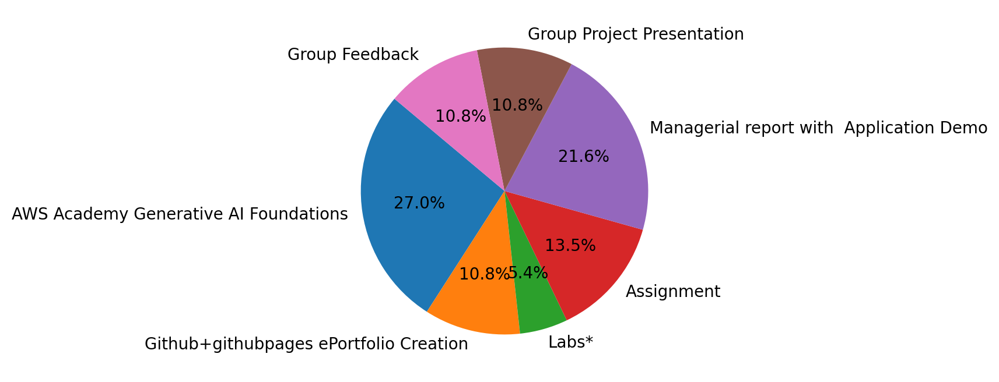
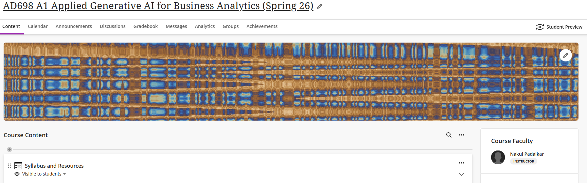

M01: Lecture Notes
Introduction to Generative AI & Business Applications
M01:
Notes
Lecture
Lecture covering Introduction to Generative AI & Business Applications.
1 Your Instructor
1.1 Nakul R. Padalkar

1.2 AD698 – Learning Path

2 What This Course Is About
This course explores how modern generative AI systems reshape analytical workflows and business decision-making. You will learn:
- How natural language functions as a data type
- How LLMs process text, structure information, and generate content
- How GenAI integrates with business analytics pipelines
- How to build practical generative-AI solutions with Python, APIs, and automation
- How to critically evaluate model outputs, reliability, and risks
- How to design human–AI workflows and deploy GenAI tools effectively in organizations
3 Why This Course Matters for Your Career
Every analytics job now intersects with LLMs.
- Analysts who master prompt engineering, RAG, automation, and LLM-based workflows will dramatically outperform peers.
AI-augmented analysts produce more work, more insight, and higher-value deliverables.
Organizations expect you to understand:
- How AI reads and structures unstructured data
- How to integrate AI into dashboards, apps, and analytical workflows
- Responsible use, privacy, transparency, and governance principles
This course trains you in supporting interviews, project pitches, and job applications while responding to the AI Augmented Analyst roles.
AI Foundations & Developer Setup
Natural Language and Generative AI Landscape
Prompt Engineering & Vector Representations
LLM Architecture & Fine-Tuning
Retrieval-Augmented Generation (RAG) Systems
Efficient Tuning & Similarity Search
LLM Memory and Multimodal Intelligence
Evaluation, Bias, and Responsible AI
Autonomous Agents and Multi-Agent Systems
4 Course Overview
5 Course Structure
5.1 Modules 0–7
Each module has two lectures, two labs, and one assignment. Topics include:
- Module 0 - AI Foundations & Developer Setup
- Module 1 - Natural Language and Generative AI Landscape
- Module 2 - Prompt Engineering & Vector Representations
- Module 3 - LLM Architecture & Fine-Tuning
- Module 4 - Retrieval-Augmented Generation (RAG) Systems
- Module 5 - Efficient Tuning & Similarity Search
- Module 6 - LLM Memory and Multimodal Intelligence
- Module 7 - Evaluation, Bias, and Responsible AI
- Module 8 - Autonomous Agents and Multi-Agent Systems
6 Course Grading
| Class Activity | Count | Points | Max Points |
|---|---|---|---|
| AWS Academy Generative AI Foundations | 1 | 100 | 100 |
| Github+githubpages ePortfolio Creation | 1 | 40 | 40 |
| Labs* | 10 | 20 | 200 |
| Assignment | 5 | 50 | 250 |
| Managerial report with Application Demo | 1 | 80 | 80 |
| Git and git website setup | 1 | - | - |
| Api and data gathering | 1 | - | - |
| Data cleaning and EDA | 1 | - | - |
| Analytics, including full website | 1 | - | - |
| Group Project Presentation | 1 | 40 | 40 |
| Group Feedback | 1 | 40 | 40 |
| Total | - | - | 750 |

6.1 Participation Components
6.1.1 LLM Lab Practice
- Weekly hands-on exercises using LLMs
- Focus on prompting, automation, and applied business tasks
6.1.2 Tooling: GitHub, Python, APIs
- You will maintain a public portfolio repository
- Every assignment and project will be submitted via GitHub
6.2 In-Class Labs
Labs are short, guided activities where you:
- Work directly with LLM models
- Explore generative workflows
- Build first-draft AI tools that feed into assignments
- Analyze data, automate tasks, and generate outputs
- Write practical reports and visualizations
On-campus: must submit weekly Online: optional but recommended for practice
6.3 Individual Assignments
Four structured assignments that build core competencies:
- Prompt Engineering & Automated Analytics
- RAG and Vector Search
- AI Pipeline for Business Intelligence
- Automated Workflow + API Integration
6.4 Group Project
A semester-long generative-AI solution to a business problem.
6.4.1 Components
| Component | Points | Description |
|---|---|---|
| Milestones via GitHub | 80 | Repo setup, design docs, data prep, RAG prototype, LLM workflow, final output |
| Presentation | 40 | Demonstrates model workflow and business impact |
| Peer Evaluation | 40 | Collaboration, clarity, and contributions |
Total: 160 points
7 Course Site
- Central hub for all materials
- Contains lecture notes, slides, labs, and links
- Includes schedule, deadlines, and announcements
- Updated continuously as the course progresses

8 Office Hours & Consultations
- Listed on Blackboard
- Weekly sessions for troubleshooting code, labs, and assignments
- Dedicated project support sessions (Saturday mornings on Zoom)
9 Generative Artificial Intelligence: A brief Overview
9.1 Introduction
Generative artificial intelligence represents one of the most significant paradigm shifts in the history of computing. For decades, computers have been designed to follow instructions - perform calculations, retrieve information, classify inputs, and obey predefined rules. Generative AI introduces something profoundly new: the ability for machines to produce original content, synthesize knowledge, reason through language, and interact conversationally in a way that resembles human creativity and communication.
These systems do not simply automate tasks; they reshape how people think, work, and engage with information. While their roots lie in classical machine learning, generative models extend far beyond traditional predictive analytics. They do not merely recognize patterns - they generate new ones.
9.2 What Is Generative AI?
Generative AI refers to models capable of creating new artifacts that did not previously exist in the training data. These artifacts may include:
- Essays, summaries, stories, and explanations
- Images, sketches, animations, or design concepts
- Scientific hypotheses or molecular structures
- Code, scripts, and executable workflows
- Synthetic data for simulation or experimentation
- Audio, music, or environmental soundscapes
- Video sequences and motion dynamics
What distinguishes generative AI from earlier forms of artificial intelligence is its ability to create content that is coherent, context-aware, adaptive, and semantically meaningful.
A generative model learns the underlying structure of the data it is trained on - the grammar of language, the geometry of images, the relationships in chemistry, the cadence of music - and uses this learned representation to create new outputs consistent with these structures.
9.3 Generative AI vs. Traditional Artificial Intelligence
Artificial intelligence is a broad umbrella that includes:
- computer vision
- speech recognition
- classical natural language processing
- reinforcement learning
- robotics
- predictive modeling
- optimization algorithms
These systems primarily classify, detect, optimize, or recommend based on the data they receive.
Generative AI is a subset of AI that explicitly focuses on creation. It does not simply categorize (“This is a dog”), nor does it merely predict a numeric outcome (“This house should be priced at $820,000”). Instead, it asks:
“Given what I’ve learned about the world, what can I produce that fits the patterns, rules, and structures I’ve internalized?”
This ability places generative AI closer to tasks traditionally seen as the domain of human cognition - drafting, designing, summarizing, reasoning, theorizing, and imagining.
9.4 The Emergence of Generative AI
Although the idea of generative modeling has existed for decades, several breakthroughs in the 2010s transformed it into a practical, powerful technology.
9.4.1 Variational Autoencoders (2013)
VAEs introduced the idea of compressing data into a hidden “latent space” that captures essential features. By sampling from this latent space, the model could reconstruct or vary the input, generating new samples that resemble the originals. This was the first demonstration that deep networks could create.
9.4.2 Generative Adversarial Networks (2014)
GANs marked a dramatic leap. Two networks - a generator and a discriminator - compete:
- the generator synthesizes new data
- the discriminator evaluates authenticity
Through this adversarial training, the generator becomes increasingly skilled at creating highly realistic output. GANs powered early deepfakes, artistic style-transfer, and synthetic photography.
9.4.3 Transformer Models (2017)
The most transformative innovation came with the transformer architecture. Transformers introduced self-attention, a mechanism that allows models to consider relationships between all elements of a sequence simultaneously. This made it possible to train models on much larger corpora of text and to capture subtle patterns in:
- meaning
- syntax
- context
- discourse structure
- world knowledge
Transformers reshaped natural language processing and enabled the development of large-scale generative models.
9.4.4 The Foundational Model Era
The last several years have given rise to large generative models capable of:
- following instructions
- carrying conversation
- integrating reasoning with generation
- explaining data
- producing creative or analytical artifacts
These models are now central to applications in business, science, healthcare, and government.
9.5 foundation Models
Foundation models are large neural networks trained on diverse, broad datasets so they can serve as general-purpose systems that perform many tasks. They are not built to solve a single narrowly defined problem. Instead, they learn representations of the world that can be adapted to countless tasks, including ones they have never seen before.
Key characteristics of foundation models include:
- Massive scale in parameters
- Multi-domain learning (technical, literary, conversational, scientific text)
- Generalization across tasks, languages, and writing styles
- Emergent abilities that arise as models grow in size
- Flexibility through prompting, tuning, and retrieval
Foundation models represent a new computational abstraction: systems that understand and generate knowledge in natural language.
9.6 How Generative Models Work
Although generative AI appears magical, its mechanisms are grounded in mathematical principles.
9.6.1 Representing Data as Distributions
Traditional machine learning estimates the probability of a label given some features (p(y|x)). Generative models instead estimate the joint distribution of inputs and outputs - the probability of both occurring together (p(x, y)). This allows the model to generate new x-values (new examples) that are consistent with the learned distribution.
9.6.2 Latent Space and Meaning
Many generative models map inputs into a “latent space,” a compressed representation that captures the essence of the data. For language models, latent vectors represent:
- meaning
- tone
- relationships
- context
- intent
For images, latent vectors represent:
- shapes
- textures
- lighting
- geometry
The model navigates this latent space to synthesize new outputs.
9.6.3 6.3 Self-Attention and Contextual Understanding
Transformers use self-attention to determine how each token (word or subword) relates to every other token. This process allows the model to maintain coherence, resolve references, and follow long, complex instructions.
9.6.4 6.4 Next-Token Prediction
At its core, a generative language model predicts the most likely next token given all previous tokens. Despite its simplicity, the depth of training enables it to produce:
- essays
- code
- analysis
- recommended actions
- explanations
- summaries
Complex reasoning emerges because next-token prediction is stacked across billions of parameters and trillions of training tokens.
9.7 Types of Generative Models (Expanded)
9.7.1 Diffusion Models
Diffusion models generate data by simulating the process of gradually adding noise to an image and then learning to reverse the process. They produce highly detailed and coherent images and are widely used for AI art and simulation.
9.7.2 Generative Adversarial Networks (GANs)
GANs remain influential for producing realistic imagery, enhancing video, and generating synthetic datasets.
9.7.3 Variational Autoencoders (VAEs)
VAEs are prized in scientific domains where interpretability and structured latent representations are crucial.
9.7.4 Transformer-Based Generative Models
Transformers have become the dominant architecture for:
- text generation
- multimodal generation
- code synthesis
- document understanding
- data reasoning
They are the backbone of today’s most powerful generative AI systems.
9.8 Applications of Generative AI Across Domains
9.8.1 Scientific Research and Discovery
Generative models accelerate:
- molecular design
- protein engineering
- scientific hypothesis generation
- literature summarization
- complex simulations
9.8.2 Healthcare and Life Sciences
Applications include:
- generating synthetic patient data
- assisting clinical documentation
- analyzing biological sequences
- supporting drug discovery workflows
9.8.3 Engineering, Automotive, and Manufacturing
Generative AI supports:
- creating optimized part geometries
- simulating rare scenarios
- predicting outcomes of design changes
- generating synthetic training data for vision models
9.8.4 Media, Arts, and Entertainment
Generative tools:
- accelerate scriptwriting and storyboarding
- assist with animation, music, and sound design
- enable personalized storytelling and world-building
9.8.5 Business Operations and Customer Experience
Generative AI enhances:
- customer support
- document summarization
- internal knowledge search
- training, onboarding, and reporting
- statistical analysis and planning
9.8.6 Energy and Infrastructure
Models support:
- predictive insights
- anomaly detection
- documentation generation
- system modeling and optimization
9.9 Benefits of Generative AI
9.9.1 Acceleration of Knowledge Work
Generative AI reduces cognitive load by:
- reorganizing information
- summarizing long documents
- drafting initial analyses
- transforming data into narrative insights
9.9.2 Enhanced Creativity
By generating diverse alternatives and variations, models expand the creative space available to humans.
9.9.3 Operational Efficiency
Generative AI automates repetitive writing, documentation, reporting, and analysis tasks.
9.9.4 Personalization
Models can refine content for specific audiences, goals, tones, or domains.
9.9.5 Synthetic Data Generation
Generative models provide high-quality synthetic datasets that support training, testing, and experimentation without risking privacy.
9.9.6 Scalability
Generative workflows allow organizations to respond faster and operate at greater scale with fewer manual bottlenecks.
9.10 Limitations and Challenges
Despite their capabilities, generative AI systems face important constraints:
9.10.1 Hallucinations
Models occasionally fabricate details or inconsistencies when they lack reliable context.
9.10.2 Bias
Biases in training data can appear in model outputs.
9.10.3 Lack of True Understanding
Generative models manipulate patterns statistically; they do not possess consciousness, intent, or genuine comprehension.
9.10.4 Explainability
The reasoning behind model outputs may be difficult to trace.
9.10.5 Resource Demands
Training and deploying generative models require substantial computational infrastructure.
9.11 Best Practices for Using Generative AI
- Begin with internal workflows before deploying externally
- Communicate clearly when AI-generated content is used
- Employ guardrails to prevent leakage of sensitive information
- Test models extensively using a range of input scenarios
- Educate users about limitations, biases, and failure modes
- Ensure that generative outputs undergo human review in critical contexts
9.12 Learning Pathways for Generative AI
Beginners benefit from understanding:
- machine learning foundations
- neural networks and attention mechanisms
- Python and model experimentation
- prompt engineering and evaluation
- embedding systems and vector search
- ethics, governance, and responsible use
This foundation supports deeper study in model tuning, RAG systems, and applied generative workflows.